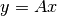

trajOptLib package¶
Subpackages¶
Submodules¶
trajOptLib.ipoptWrapper module¶
ipoptWrapper.py
A wrapper for ipopt solver
-
class
trajOptLib.ipoptWrapper.ipOption¶ Bases:
objectA class containing settings for ipopt solver.
-
addFloatOption(key, value)¶
-
addIntOption(key, value)¶
-
addOption(key, value)¶
-
addStrOption(key, value)¶
-
-
class
trajOptLib.ipoptWrapper.ipSolver(prob, option=None)¶ Bases:
objectA solver class for ipopt. It accepts my conventional problem type.
-
solveGuess(x0)¶ Solve the problem with some user-supplied guess.
Parameters: x0 – ndarray, solution/guess to the problem.
-
solveRand()¶ Use problem to generate a random guess and solve it from there.
It generates a random initial guess (which might be far off for unknown problem) and use it to solve.
-
trajOptLib.snoptWrapper module¶
snoptWrapper.py
Wrapper functions for calling snopt
-
trajOptLib.snoptWrapper.directSolve(fun, x0, nf=None, xlb=None, xub=None, clb=None, cub=None, cfg=None)¶ Directly solve the optimization problem described using fun with guess x0
Parameters: - fun – A function like y = f(x) where x, y are np.ndarray
- x0 – np.ndarray (nx,) the initial guess to the solver
- nf – int, length of y
- xlb – np.ndarray (nx,) lower bound on decision variable x
- xub – np.ndarray (nx,) upper bound on decision variable x
- clb – np.ndarray (nc,) lower bound on return function c
- cub – np.ndarray (nc,) upper bound on return function c
- cfg – libsnopt.snoptConfig, configuration of snopt solver
Returns: a dictionary containing the solution
-
trajOptLib.snoptWrapper.gradSolve(fun, x0, nf=None, xlb=None, xub=None, clb=None, cub=None, cfg=None)¶ Directly solve the optimization problem described using fun with guess x0
Parameters: - fun – A function like y, J = f(x) where x, y, J are np.ndarray
- x0 – np.ndarray (nx,) the initial guess to the solver
- nf – int, length of y
- xlb – np.ndarray (nx,) lower bound on decision variable x
- xub – np.ndarray (nx,) upper bound on decision variable x
- clb – np.ndarray (nc,) lower bound on return function c
- cub – np.ndarray (nc,) upper bound on return function c
- cfg – libsnopt.snoptConfig, configuration of snopt solver
Returns: a dictionary containing the solution
-
trajOptLib.snoptWrapper.inDirectSolve(fun, x0, nf=None, xlb=None, xub=None, clb=None, cub=None, cfg=None)¶ Directly solve the optimization problem described using fun with guess x0
Parameters: - fun – A function like f(x, y) where x, y are np.ndarray
- x0 – np.ndarray (nx,) the initial guess to the solver
- nf – int, length of y
- xlb – np.ndarray (nx,) lower bound on decision variable x
- xub – np.ndarray (nx,) upper bound on decision variable x
- clb – np.ndarray (nc,) lower bound on return function c
- cub – np.ndarray (nc,) upper bound on return function c
- cfg – libsnopt.snoptConfig, configuration of snopt solver
Returns: a dictionary containing the solution
-
trajOptLib.snoptWrapper.inGradSolve(fun, x0, nf=None, xlb=None, xub=None, clb=None, cub=None, cfg=None)¶ Directly solve the optimization problem described using fun with guess x0
Parameters: - fun – A function like f(x, y, J) where x, y, J are np.ndarray
- x0 – np.ndarray (nx,) the initial guess to the solver
- nf – int, length of y
- xlb – np.ndarray (nx,) lower bound on decision variable x
- xub – np.ndarray (nx,) upper bound on decision variable x
- clb – np.ndarray (nc,) lower bound on return function c
- cub – np.ndarray (nc,) upper bound on return function c
- cfg – libsnopt.snoptConfig, configuration of snopt solver
Returns: a dictionary containing the solution
-
trajOptLib.snoptWrapper.inSpGradSolve(fun, x0, nf=None, nG=None, xlb=None, xub=None, clb=None, cub=None, cfg=None)¶ Directly solve the optimization problem described using fun with guess x0
Parameters: - fun – A function like f(x, y, G, row, col, rec) where x, y are np.ndarray, J is scipy.sparse.csc_matrix
- x0 – np.ndarray (nx,) the initial guess to the solver
- nf – int, number of f
- nG – int number nonzero in Jacobian
- xlb – np.ndarray (nx,) lower bound on decision variable x
- xub – np.ndarray (nx,) upper bound on decision variable x
- clb – np.ndarray (nc,) lower bound on return function c
- cub – np.ndarray (nc,) upper bound on return function c
- cfg – libsnopt.snoptConfig, configuration of snopt solver
Returns: a dictionary containing the solution
-
trajOptLib.snoptWrapper.parseResult(rst)¶ Parse the results returned by snopt and convert to a dict.
-
trajOptLib.snoptWrapper.spGradSolve(fun, x0, nf=None, nG=None, xlb=None, xub=None, clb=None, cub=None, cfg=None)¶ Directly solve the optimization problem described using fun with guess x0
Parameters: - fun – A function like y, spJ = f(x) where x, y are np.ndarray, J is scipy.sparse.csc_matrix
- nf – int, length of y
- nG – int, nnz of spJ
- x0 – np.ndarray (nx,) the initial guess to the solver
- xlb – np.ndarray (nx,) lower bound on decision variable x
- xub – np.ndarray (nx,) upper bound on decision variable x
- clb – np.ndarray (nc,) lower bound on return function c
- cub – np.ndarray (nc,) upper bound on return function c
- cfg – libsnopt.snoptConfig, configuration of snopt solver
Returns: a dictionary containing the solution
trajOptLib.trajOptBase module¶
trajOptBase.py
Classes ready to be used for trajectory optimization.
-
class
trajOptLib.trajOptBase.baseFun(nx, nf, gradmode, ng=None)¶ Bases:
trajOptLib.libsnopt.funBaseBase class for functions, including both objective and constraint.
This function should be inherited to define your own functions. A function with user supplied gradient information, nx, nf, ng should be set.
-
grad= ['user', 'no']¶
-
-
class
trajOptLib.trajOptBase.linearObj(A)¶ Bases:
trajOptLib.trajOptBase.baseFunClass for directly add linear objective function over the entire decision variable.
It serves for objective of form  where
 is the collected long vector.
is the collected long vector.
-
class
trajOptLib.trajOptBase.linearPointObj(index, A, nx, nu, np)¶ Bases:
trajOptLib.trajOptBase.baseFunClass for directly add linear objective function over the entire decision variable.
It serves for objective function of the form where
is the concatenated vector of state,
control and parameter at a selected index.
-
class
trajOptLib.trajOptBase.lqrObj(F=None, Q=None, R=None, xfbase=None, xbase=None, ubase=None, tfweight=None, P=None, pbase=None)¶ Bases:
objectClass for LQR objective since it is so common. It is treated independently with pathObj.
-
class
trajOptLib.trajOptBase.nonDiagLQRObj¶ Bases:
objectClass for LQR objective with non-diagonal entries
-
class
trajOptLib.trajOptBase.nonLinConstr(nsol, nc, lb=None, ub=None, gradmode='user', nG=None)¶ Bases:
trajOptLib.trajOptBase.baseFunClass for defining constraint function in a general form.
-
class
trajOptLib.trajOptBase.nonLinObj(nsol, gradmode='user', nG=None)¶ Bases:
trajOptLib.trajOptBase.baseFunClass for general nonlinear objective function over the entire decision variables.
The objective function is basically calculated by calling a nonlinear function.
-
class
trajOptLib.trajOptBase.nonPointObj(index, nx, nu, np=0, gradmode='user', nG=None)¶ Bases:
trajOptLib.trajOptBase.baseFunClass for defining point objective function.
Similar to linear case. A function that takes the concatenated vector at a selected index is used.
-
class
trajOptLib.trajOptBase.pointConstr(index, nc, nx, nu, np=0, lb=None, ub=None, gradmode='user', nG=None)¶ Bases:
trajOptLib.trajOptBase.baseFunClass for defining point constraint function.
-
class
trajOptLib.trajOptBase.system(nx, nu, np=0, ode='RK4')¶ Bases:
objectDescription of the dynamical system.
To define a dynamical system, we need to specify dimension of state, control, and parameter. Optionally, integration approach can be selected. This function should be inherited and users are supposed to override dyn/Jdyn functions.
-
Jdyn(t, x, u, p=None, h=None)¶ Dynamics function with Jacobian return.
It has to be overriden.
Parameters: x, u, p, h (t,) – see dyn Returns: y: ndarray, either dotx or x_k+1 Returns: J: ndarray/spmatrix, returning Jacobian of this function evaluation
-
dyn(t, x, u, p=None, h=None)¶ Dynamics function without gradient information.
It has to be overriden.
Parameters: - t – float, time when evaluating system dynamics
- x – np.ndarray, (nx,) state variable
- u – np.ndarray, (nu,) control variable
- p – np.ndarray, (np,) additional optimizing variable
- h – float, used for discretized system. Integration step size
Returns: either dotx or x_k+1 depends on system type
-
odes= ['RK4', 'Dis', 'Euler', 'BackEuler']¶
-
setOde(method)¶ Set ode approach.
Parameters: method – str, name of ode approach.
-
trajOptLib.trajOptProblem module¶
trajOptProblem.py
Class for describing the trajectory optimization problems.
-
class
trajOptLib.trajOptProblem.addX(n, lb=None, ub=None)¶ Bases:
objectA description of additional optimizing parameter.
It is intended to be used if the optimal control has like point constraint. In this class the user has to supply the size and bounds of those variables.
-
class
trajOptLib.trajOptProblem.trajOptProblem(sys, N=20, t0=0.0, tf=1.0, gradmode=True, addx=None)¶ Bases:
trajOptLib.libsnopt.probFunA class for definition of trajectory optimization problem.
A general framework for using this class is to:
- Define a class inherited from system and write dyn/Jdyn method.
- Optionally, write desired cost function by inheriting/creating from the list of available cost functions.
- Optinally, write desired constraint functions by inheriting from available constraints.
- Create this class with selected system, discretization, t0, tf range, gradient option
- Set bounds for state, control, parameters, x0 and xf
- Add objective functions and constraints to this class
- Call preProcess method explicitly
- Create snoptConfig instance and choose desired options
- Construct the solver
- Use the solver to solve with either automatic guess or user provided guess
-
addLQRObj(lqrobj)¶ Add a lqr objective function to the problem. It changes lqrObj into a function being called in two modes…
Parameters: lqrobj – a lqrObj class.
-
addLinPointObj(linPointObj, path=False)¶ Add linear point objective function.
Parameters: - linPointObj – linearPointObj class
- path – bool, if this is path obj (at every point except for final one)
-
addLinearObj(linObj)¶ Add linear objective function.
Parameters: linObj – linearObj class
-
addNonLinConstr(constr)¶ Add a general nonlinear constraint.
Parameters: constr – nonLinConstr class
-
addNonLinObj(nonlinObj)¶ Add nonlinear objective function.
Parameters: nonLinObj – a nonLinObj class
-
addNonPointObj(nonPntObj, path=False)¶ Add nonlinear point objective.
Parameters: - nonPntObj – nonLinObj class
- path – bool, if this obj is pointwise
-
addPointConstr(pntConstr, path=False)¶ Add point constraint.
Parameters: - pntConstr – pointConstr class
- path – bool, if this obj
-
getDynSparsity(x)¶ Set sparsity of the problem caused by system dynamics and other nonlinear constraints.
Parameters: x – ndarray, the guess/sol
-
getObjSparsity(x)¶ Set sparsity structure of the problem from objective function.
For objective function, we do calculation by assigning gradient to a vector of length numSol. The sparsity pattern is remembered which is a mask that is then used to assign G. This function also determines if it is safe to turn on aggressive mode where we directly assign G. We can safely turn it on in the following conditions: - only lqrObj is supplied - only one of nonLinObj, nonPointObj, nonPathObj, linearObj, linPointObj, linPathObj is non-empty In other cases, we still have to remember which maps to which and there is not much improvement compared with current implementation # TODO: add support such that user has option to safely insert an objective function. Such as path obj plus terminal cost. In long run, add linear obj support
Parameters: x – ndarray, the guess/sol Returns: indices: ndarray, the indices with non-zero objective gradient
-
getSparsity(x0)¶
-
ipEvalF(x)¶ The eval_f function required by ipopt.
Parameters: x – a guess/solution of the problem Return f: float, objective function
-
ipEvalG(x)¶ Evaluation of the constraint function.
Parameters: x – ndarray, guess/solution to the problem. Return g: constraint function
-
ipEvalGradF(x)¶ Evaluation of the gradient of objective function.
Parameters: x – guess/solution to the problem Return grad: gradient of objective function w.r.t x
-
ipEvalJacG(x, flag)¶ Evaluate jacobian of constraints. I simply call __callg__
Parameters: - x – ndarray, guess / solution to the problem
- flag – bool, True return row/col, False return values
-
parseF(guess)¶ Give an guess, evaluate it and parse into parts.
Parameters: guess – ndarray, (numSol, ) a guess or a solution to check Returns: dict, containing objective and parsed constraints
-
parseSol(sol)¶ Call parseX function from utility and return a dict of solution.
-
preProcess()¶ Initialize the instances of probFun now we are ready.
Call this function after the objectives and constraints have been set appropriately. It calculate the space required for SNOPT and allocates sparsity structure if necessary.
-
randomGenX()¶ A more reansonable approach to generate random guess for the problem.
It considers bounds on initial and final states so this is satisfied. Then it linearly interpolate between states. Controls are randomly generated within control bound, if it presents. Otherwise [-1, 1]
Return x: ndarray, (numSol, ) an initial guess of the solution
-
setFbound()¶ Set bound on F
-
setN(N)¶ Set N.
Parameters: N – the size of discretization.
-
setXbound()¶ Set bounds on decision variables.
-
sett0tf(t0, tf)¶ Set t0 and tf.
Parameters: - t0 – float/ndarray (2,) allowable t0
- tf – float/ndarray (2,) allowable tf
trajOptLib.utility module¶
utility.py
Collection of utility functions such as solution parsing and showing.
-
trajOptLib.utility.checkInBounds(x, bds)¶ Check the position of variables in a bound.
Basically, it returns the position of actual value in the bounds [-1, 1]. If both sides are bounded, it simply calculate this value. If one side is bounded, it check if value if within certain threshold with the bound Unbounded variables shall always return 0, the same applies to equality-bounded variables.
-
trajOptLib.utility.parseX(x, N, dimx, dimu, dimp, uset0, usetf, setfinal=True)¶ Parse the solution into a dict of time, state, control, parameter.
Parameters: - x – ndarray, solution found by SNOPT
- dimx, dimu, dimp (N,) – discretization of the problem
- usetf (uset0,) – float/array like, specification of initial and final time
- setfinal – if we set the final element of u/p the same with second last
Returns: a dictionary of keys ‘t’, ‘x’, ‘u’, ‘p’
-
trajOptLib.utility.randomGenInBound(bds, n=None)¶ Randomly generate a vector within bounds / [-1, 1]
Parameters: - bds – list/tuple of ndarray, the bounds of variable
- n – if bds are None, this is for determining size of vector
Return x: ndarray, the random generated variable
-
trajOptLib.utility.showSol(solDict, xsplit=None, usplit=None, psplit=None)¶ Plot the parsed solution.
Parameters: - solDict – dict, returned from solParse; or a list of such dict. Then they are compared
- xsplit – if state space is large, this splits it into several images it’s a list of int like (3, 6). None means no split
- usplit – similar to xsplit, apply for control
- psplit – similar to xsplit, apply for parameter